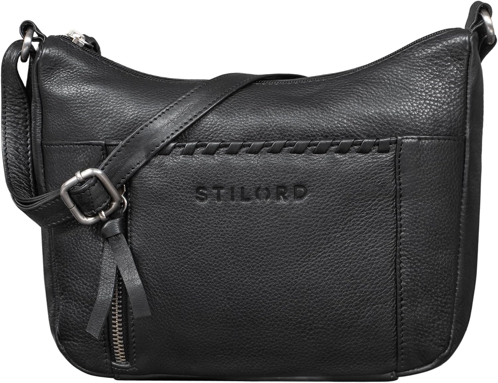

STILORD Nia Mujer Bolso Hombro Pequeño Bolsos de…
STILORD Nia Mujer Bolso Hombro Pequeño Bolsos de Mano Cuero Mujeres Bolsa Vintage Piel Bandolera Cuero Genuino Color:Negro
Pieza de la colección

STILORD Nia Mujer Bolso Hombro Pequeño Bolsos de…
59,97 €
Lo que destacan las compradoras
- Calidad
- Estética
- Comodidad
Lo que critican
- Olor inicial
Con una nota media de 4,4 sobre 5 en 91 valoraciones — una base de compra sólida — no es un bolso para comprar a ciegas: es para comprar convencido.
Aparece en el diario los días: 22, 60, 98, 136, 174, 212, 250, 288, 326, 364. Nota media 4,4★ sobre 91 valoraciones reales.